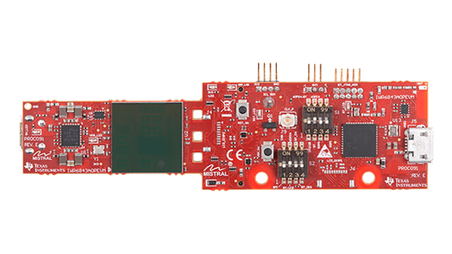
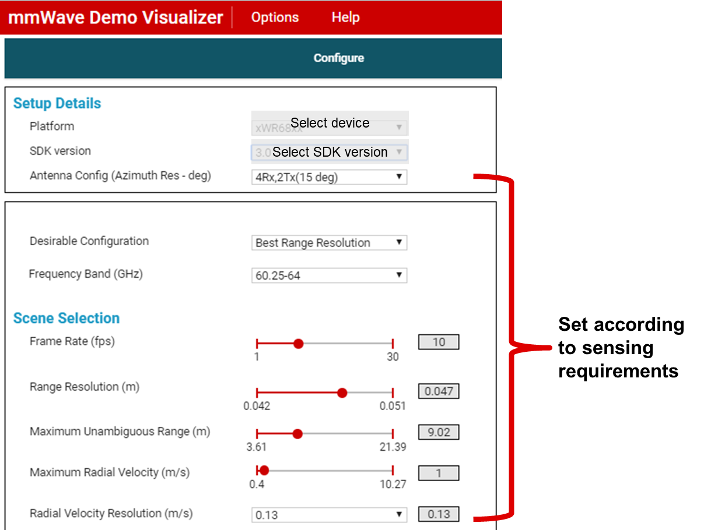

Overview of mmWave SDK Out of Box Demo - 68xx AOP
===========
This is the mmWave SDK out-of-box demo lab for the TI IWR6843AOPEVM. Run this out-of-box demo to view processed TI mmWave sensor data in configurable plots using the web-based mmWave Demo Visualizer.
**NOTE**: This version of the SDK out-of-box demo is for IWR6843AOPEVM but only uses the on-chip Hardware FFT acclerator (HWA) and does not utilize the on-chip c674x DSP. In this User Guide many of labels show xWR64xx but the demo is compatible with the IWR6843AOP. The name xwr64xx is reserved for future devices without the on-chip c674x DSP core.
{{y
Users of an IWR6843AOPEVM should first run this lab before any other lab in the mmWave Industrial Toolbox. This will enable users to gain familiarity with the sensor's capabilities as well as the various tools used across all labs in the mmWave Industrial Toolbox.
}}
<img src="../../common/docs/images/gui/mmwave_demo_visualizer_plots.png" width="600" class="img-responsive"/>
# Requirements
### Required and Supported mmWave Evaluation Modules (EVM)
Quantity | Item
------------------|-----------------
1 | [IWR6843AOPEVM](http://www.ti.com/tool/IWR6843AOPEVM)
1 | OPTIONAL: [Industrial mmWave Carrier Board](http://www.ti.com/tool/MMWAVEICBOOST) for CCS based debugging
[[r! AoP ES2.0 EVM only
The IWR6843 AoP version of this lab is only compatible with ES2.0 silicon and the corresponding EVM. Please ensure your EVM is the same as in the below image.

]]
### Additional Hardware Requirements
Quantity | Item | Details
---------|--------------------------|-----------------
1 | Computer | Windows 7 or 10 PC with Google Chrome Browser and TI Cloud Agent Extension installed.
1 | Micro USB Cable | Provided with the EVM
1 | Power Supply | OPTIONAL: If using the carrier board, a 5V, 3A with 2.1-mm barrel jack (center positive). The power supply can be wall adapter style or a battery pack with a USB to barrel jack cable.
### Software
Tool | Version | Download Link
----------------------------|---------------------------|--------
TI mmWave SDK | 3.5.x.x | [Link to Latest mmWave SDK](http://software-dl.ti.com/ra-processors/esd/MMWAVE-SDK/latest/index_FDS.html) To access a previous version of the mmWave SDK scroll to the bottom of the table and click the link under "MMWAVE-SDK previous release". Repeat to continue stepping back to previous versions.
mmWave Demo Visualizer | 3.5.0+ | Available online at https://dev.ti.com/gallery/view/mmwave/mmWave_Demo_Visualizer/
mmWave Industrial Toolbox | Latest | Download and install the toolbox. Go to [Using TI Resource Explorer & the mmWave Industrial Toolbox](../../../../docs/readme.html) for instructions.
Uniflash | Latest | Uniflash tool is used for flashing TI mmWave Radar devices. [Download offline tool](http://www.ti.com/tool/UNIFLASH) or use the [Cloud version](https://dev.ti.com/uniflash/#!/)
Silicon Labs CP210x USB to UART Bridge VCP Drivers | Latest | [https://www.silabs.com/products/development-tools/software/usb-to-uart-bridge-vcp-drivers](https://www.silabs.com/products/development-tools/software/usb-to-uart-bridge-vcp-drivers)
Quickstart
===========
The quickstart guide will cover setting up the EVM, flashing firmware, and running the demo.
By the end users should be able to visualize detected object data using the sensor and be able to begin evaluating different configurations and plot capabilities.
## 1. Setup the EVM for Flashing Mode
Follow the instructions for [Hardware Setup of IWR6843AOPEVM for Flashing Mode](../../../common/docs/hardware_setup/hw_setup_aop_modular_mode_flashing.html)
## 2. Flash the EVM using Uniflash
Flash the binary listed below using UniFlash. Follow the instructions for [using UniFlash](../../../common/docs/software_setup/using_uniflash_with_mmwave.html)
BIN Name | Location
--------------------------|------------
xwr64xxAOP_mmw_demo.bin | `<INDUSTRIAL_TOOLBOX_INSTALL_DIR>\mmwave_industrial_toolbox_<VER>\out_of_box_demo\`<br>`68xx_aop_mmwave_sdk_hwa\prebuilt_binaries\xwr64xxAOP_mmw_demo.bin`
Note: The demo source code and pre-compiled binary for the mmWave SDK out-of-box demo is available at `<MMWAVE_SDK_INSTALL_DIR>\mmwave_sdk_<VER>\packages\ti\demo\xwr64xx\mmw`.
For convenience, the _exact same_ pre-compiled binary is also provided within the mmWave Industrial Toolbox at the path listed in the table above.
## 3. Setup the EVM for Functional Mode
Follow the instructions for [Hardware Setup of IWR6843AOPEVM for Functional Mode](../../../common/docs/hardware_setup/hw_setup_aop_modular_mode_functional.html)
At this point, the EVM should be powered, connected to the PC, flashed with the demo, and put in functional mode. The hardware setup is now complete.
## 4. Run the Lab
The following steps will walk through running the lab. This involves setting up the GUI to communicate with the EVM, sending a configuration to the device, and then visualizing the resulting output with the GUI.
### 1. GUI Setup
* Using Google Chrome, navigate to the following URL: [https://dev.ti.com/mmWaveDemoVisualizer](https://dev.ti.com/mmWaveDemoVisualizer)
* If prompted, follow the on-screen instructions for installing TI Cloud Agent (this is needed the first time on a new PC)
* Tip: If there are problems with installing the TI Cloud Agent, restart the PC and try again.
* In the GUI menu, select Options → Serial Port
* In the serial port window, enter the appropriate port in each of the drop down menus based on your port numbers from the [Flash the EVM](#2-flash-the-evm-using-uniflash) section
* Click on Configure to connect the GUI to the EVM. The GUI Status bar at the bottom should update with information about the two ports as well as the EVM type
<img src="images/mmwave_demo_visualizer_ports_aop.png" width="800"/>
### 2. Running the Demo
-----------
* On the Configure Tab, select the appropriate mmWave SDK and device from the Platform dropdown menu
* Use the available sliders to create the desired configuration.
* You can also use the presets available in the Desirable Configuration drop-down list.
* Additional details about the configuration parameters can be found in the [mmWave Demo Visualizer User Guide](http://www.ti.com/lit/pdf/swru529)

* Select the desired plots under Plot Selection (e.g. Scatter Plot, Range Azimuth Plot)
* When ready to send the configuration, click on Send Config To mmWave Device
<img src="../../common/docs/images/gui/mmwave_demo_visualizer_plot_selection.png" width="550"/>
* Click on the Plots tab to view the plots that were selected to be shown
<img src="../../common/docs/images/gui/mmwave_demo_visualizer_plots.png" width="600" />
* Move a highly reflective object in front of the EVM and see how the demo responds.
* You can use the Real Time Tuning controls shown below to adjust CFAR thresholds, Modify Field of View and enable or disable Peak grouping in real time.
<img src="../../common/docs/images/gui/mmwave_demo_visualizer_rt_tuning.png" width="550"/>
This concludes the Quick Start Section
-----------
Developer's Guide
===========
* [Build the firmware from source code](#build-the-firmware-from-source-code)
* [Work with GUI source code](#work-with-gui-source-code)
* [Understand input config file](#understand-input-config-file)
Build the Firmware from Source Code
-----------
### 1. Software Requirements
Tool | Version | Download Link
----------------------------|---------------------------|--------------
TI mmWave SDK | 3.5.x.x | [Link to Latest mmWave SDK](http://software-dl.ti.com/ra-processors/esd/MMWAVE-SDK/latest/index_FDS.html) To access a previous version of the mmWave SDK scroll to the bottom of the table and click the link under "MMWAVE-SDK previous release". Repeat to continue stepping back to previous versions.
Code Composer Studio | 8.3.1 | [Code Composer Studio v8](http://processors.wiki.ti.com/index.php/Download_CCS#Code_Composer_Studio_Version_8_Downloads)
### 2. Import Lab Project
To import the source code into your CCS workspace, CCS projects are provided for the mmWave SDK Out-of-box demo in the mmWave Industrial Toolbox.
[[b! Project Workspace
When importing projects to a workspace, a copy is created in the workspace. It is important to note that the copy in the user's workspace is the one that gets built and all modifications will only be implemented for the workspace copy. The original project downloaded in mmWave Industrial Toolbox is not modified.
]]
- Start CCS and setup workspace as desired.
- Import the project(s) specified below to CCS. See instructions for importing [here](../../../../docs/readme.html#import-ccs-projects-from-the-mmwave-industrial-toolbox-into-code-composer-studio)
Project Name | Location in Industrial Toolbox
---------------------------|-----------------------------
mmwave_sdk_68xx_aop_hwa | `<INDUSTRIAL_TOOLBOX_INSTALL_DIR>\mmwave_industrial_toolbox_<VER>\out_of_box_demo\mmwave_sdk_68xx_aop_hwa\src`
- Verify that the import occurred without error: in CCS Project Explorer **mmwave_sdk_68xx_aop_hwa** project should appear.
[[r! Error during Import to IDE
If an error occurs, check that the software dependencies listed above have been installed. Errors will occur if necessary files are not installed in the correct location for importing.
]]
### 3. Build the Lab
1. Select the **mmwave_sdk_68xx_aop_hwa** so it is highlighted. Right click on the project and select **Rebuild Project**.
2. On successful build, the following should appear:
* xwr64xx_aop_mmw_demo.bin (this is the flashable binary used for deployment mode)
* xwr64xx_aop_mmw_mss.xer4f (this is the Cortex R4F binary used for CCS debug mode)
{{y Selecting Rebuild instead of Build ensures that the project is always re-compiled. This is especially important in case the previous build failed with errors.}}
[[r! Build Fails with Errors
If the build fails with errors, please ensure that all the software requirements are installed as listed above and in the mmWave SDK release notes.
]]
[[b! Note
As mentioned in the [Quickstart](#quickstart) section, pre-built binary files, both debug and deployment binaries are provided in the pre-compiled directory of the lab.
]]
### 4. Execute the Compiled Lab
There are two ways to execute the compiled code on the EVM:
* **Deployment mode**: In this mode, the EVM boots autonomously from flash and starts running the bin image
* Use the **xwr64xx_aop_mmw_demo.bin** found at `<PROJECT_WORKSPACE_DIR>\mmwave_sdk_68xx_aop_hwa\Debug\` and follow the same process in the [Quickstart](#quickstart) section except flash this binary instead.
* **Debug mode**: This mode is is used for downloading and running the executable from CCS. This mode enables JTAG connection with CCS while the lab is running and is useful during development and debugging.
* Follow the [CCS Debug Mode Guide](../../../common/docs/software_setup/using_ccs_debug.html), using the binaries listed below.
* After CCS Debug mode is setup, launch the visualizer and load a config as described in the [Run the Lab section of the Quickstart](#4-run-the-lab)
Debug binary | Location | Connect and load to
---------------|----------|----------------------
xwr64xx_aop_mmw_mss.xer4f | `<PROJECT_WORKSPACE_DIR>\mmwave_sdk_68xx_aop_hwa\Debug\` | Cortex_R4_0
### 5. Output from mmWave Demo Visualizer and Output using DCA1000EVM
The mmWave Demo Visualizer is used to visualize processed output data from the mmWave radar device. This processed output data can be saved in binary form to a .DAT file. Additionally, raw ADC data can be saved for offline processing using the [DCA1000 EVM](https://www.ti.com/tool/DCA1000EVM).
To learn more about the structure of this output data please refer to the following resources:
[[b! Output Data versus Raw ADC Data
Output data refers to point cloud data (x,y,z,v). Raw ADC data refers to digitally sampled sensor data.
]]
* Output Data Structure Information:
* `<MMWAVE_SDK_INTSALL_DIR>\packages\ti\demo\xwr68xx\mmw\docs\doxygen\html\index.html`
* How to use the [DCA100EVM](https://www.ti.com/tool/DCA1000EVM) for raw data capture:
* `<MMWAVE_SDK_INTSALL_DIR>\docs\mmwave_sdk_user_guide.pdf` <br>Section 3.3.2 mmWave Demo with LVDS-Based Instrumentation
* Parsing Script Information for mmWave Demo Visualizer
* `<MMWAVE_SDK_INTSALL_DIR>\docs\mmwave_sdk_user_guide.pdf` <br>Section 3.3.1 mmWave Demo - Advanced GUI Options
* Parsing Script Location for mmWave Demo Visualizer and [DCA100EVM](https://www.ti.com/tool/DCA1000EVM) for raw data capture:
* `<MMWAVE_SDK_INTSALL_DIR>\packages\ti\demo\parser_scripts`
-----------
Work with GUI source code
-----------
This demo uses the mmWave Demo Visualizer which was created using GUI Composer. Users can import the GUI source code into the cloud version of GUI Composer to view and modify the source code as needed.
1. Open the mmWave Demo Visualizer: https://dev.ti.com/gallery/view/mmwave/mmWave_Demo_Visualizer/
2. In the upper top menu, go to Help → Download or Clone Visualizer
3. Click on the import to GUI Composer icon.
4. The mmWave_Demo_Visualizer project and its source code should now be visible within GUI composer.
A quick overview of the mmWave Demo Visualizer specific files follows:
* mmWave.js: Main file that communicates with the GUI composer framework, communicates to the mmWave device using the configured COM ports, processes GUI-generated actions, and plots the data generated by the mmWave device
* input_validations.js: validates the CLI configuration before it is sent to the mmWave device
* dynamic_tuning.js: implementation of "real time tuning" tab and "advanced commands" tab
* input.js: Handles all the backend computations behind the CONFIGURE tab
* Index.gui: Auto-generated file that handles the layout of the Visualizer app
* Helper utilities: Delaunay.js, fft.js, math.js, math_griddata.js, and myutil.js
For help with GUI Composer refer to:
* [GUI Composer Getting Started Guide](https://dev.ti.com/gc/designer/help/Tutorials/GettingStarted/index.html)
* [GUI Composer User's Guide](https://dev.ti.com/gc/designer/help/UsersGuide/index.html)
-----------
Understand Input Config File
-----------
With the mmWave Demo Visualizer, users can generate and send a cfg file or load an existing cfg file.
The commands and parameters contained in the cfg file are detailed in: "Section 3. 4. Configuration (.cfg) File Format" of the [mmWave SDK user's guide](http://software-dl.ti.com/ra-processors/esd/MMWAVE-SDK/latest/exports/mmwave_sdk_user_guide.pdf).
-----------
Need More Help?
===========
* Additional resources in the documentation of the mmWave SDK:
* mmWave SDK Module Doc located at `<mmwave_sdk_install_dir>/docs/mmwave_sdk_module_documentation.html`
* mmWave SDK User's Guide located at `<mmwave_sdk_install_dir>/docs/mmwave_sdk_user_guide.pdf`
* mmWave SDK Release Notes located at `<mmwave_sdk_install_dir>/docs/mmwave_sdk_release_notes.pdf`
* Search for your issue or post a new question on the [mmWave E2E forum](https://e2e.ti.com/support/sensor/mmwave_sensors/f/1023)